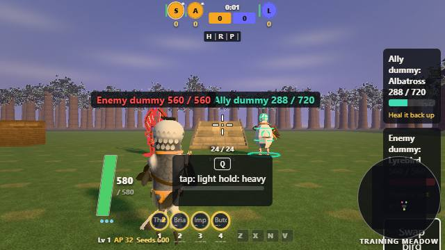
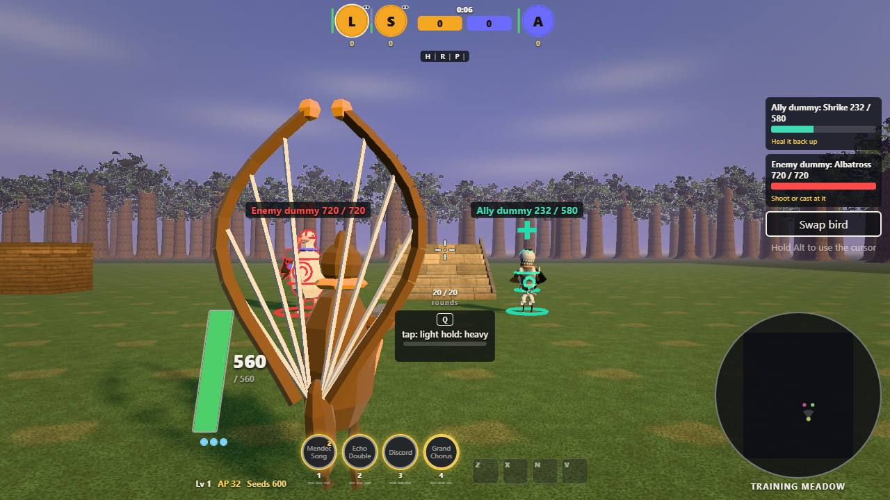

Practice dummies
The Practice Hub has two training targets that sit in front of you. They show rings on their real head and body hitboxes: red with an X and a bullseye for the enemy dummy, teal with a plus for the ally dummy.


- The enemy dummy takes damage. When it has been hurt enough it resets to full health after a short pause, so you can repeat a damage test.
- The ally dummy starts wounded so heals and shields have something to do, and also resets.
- The hub gives you a pool of Ability Points so you can try upgrades. Holding the upgrade key frees the mouse, shows ability descriptions on hover and lets you buy an affordable upgrade with a click. The pause menu and an on-screen button both offer Swap bird: pick another bird without leaving, and you respawn as it with fresh Ability Points.
| Practice Hub | Value |
|---|---|
| Dummy placement | 9 m ahead, 3 m to each side |
| Ally dummy starts wounded at | 40% |
| Practice Ability Points | 32 |
| Items in the Hoard | 64 |
Start it from Practice Hub on the main menu: see Game modes.